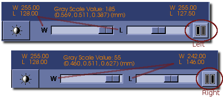
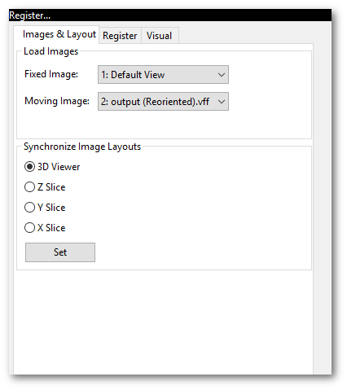
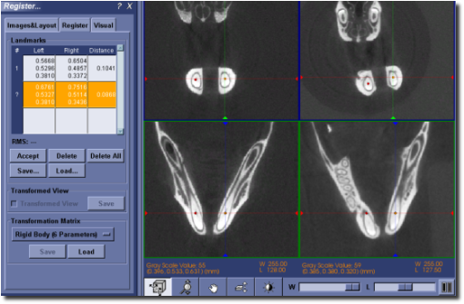
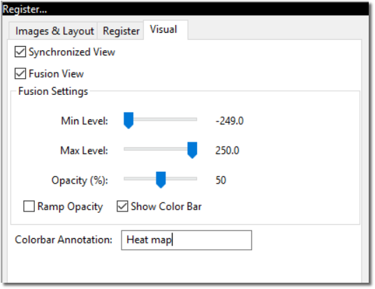

Image Registration and Fusion Application
Overview
Image registration is the process of finding a spatial transform that co-aligns two images, such that homologous features in both images (i.e. identical landmarks in the two distinct images) are given the same spatial coordinate. This is commonly performed so that the two images may be displayed superimposed together (i.e. fused) in a fashion that makes corresponding features easily viewed and identified. MicroView's register tool is designed for manual landmark registration. Manual landmark registration involves picking two sets of homologous landmarks from so-called "fixed" and "moving" images. A simple sum of least squares fitting algorithm is then used to determine the transformation to map the moving image to the coordinate system of the fixed image based on the landmarks selected.
There is an option in this registration tool that allows the user to select the type of transform to be performed. The options are rigid body, similarity, and full affine transformations.
Once images are registered they can be visualized through synchronization and/or fusion. For example, an image gathered from a positron emission tomography (PET) scanner provides functional information whereas an image obtained from a computed tomography (CT) scanner provides information regarding the structure and anatomy of the specimen. Synchronization and fusion will correlate the structural and functional information.
Using the Register Tool
Activate the Register Tool by selecting Plugins → Register... from
MicroView's menu or by clicking on the Register button in the
Applications group of MicroView's toolbar. The registration process is
divided into the following 3 main steps:
- Loading Images and Layout Setup
- Landmark Registration
- Visualization
Notice that a toggle button appears beside the window/level slides when the Register Tool is activated.

Click on the button to toggle the control of the window/level slides to the left and right images.
Loading Images and Layout Setup

- Click the
Images & Layouttab to activate this page. - Using the
Fixed Imagedrop-down selector, choose an image from the list of loaded images. - Use the
Moving Imagedrop-down selector to select a second, moving image target. - Select the views desired in the
Synchronize Image Layoutssection and click theSetbutton to update the display. The view settings can be changed at any time during the registration process.
Landmark Registration
Landmarks
Click on the Register tab to activate this page.

The following are typical steps to do landmark registrations:
- To select landmarks on images, position the cursor over a landmark
in either image and then press the Space on the keyboard. Do
the same to the other image to find the corresponding landmark. The
selected pair of landmarks are shown as orange marks. At the same
time, the coordinates of the landmarks are displayed in a row in the
table on the left panel, which is highlighted in orange color and
begins with a
?mark. These two landmarks can be moved around by moving the mouse to new positions and then pressing the Space. Zoom in on the images if required to fine-tune the locations of the landmarks. Sometimes, it may be easier to locate the corresponding landmarks in a oblique view. Use the 3D view to manipulate the image and get oblique views. - To record the pair of landmarks that are selected in previous step, click the Accept button, or press the Enter key. This pair of landmarks will be displayed as red marks to indicate that they are accepted and recorded. The recorded landmarks may not be moved around. However, they can be deleted and replaced by a new pair.
- Repeat the above two steps to find more pairs of landmarks. There is no upper limit for the number of landmarks that may be selected. However, a minimum of 3 pairs of landmarks must be selected for 2D images and at least 4 pairs of landmarks must be selected for 3D images. Once enough landmarks have been selected a transformation matrix is automatically calculated to register the moving image on left to the fixed image on the right. The initially disabled Transformed View check box becomes enabled.
- Check the Transformed View check box to switch the moving image to the transformed view. At this stage, it may be sufficient to skip to the visualization section and examine the registration result. If the result is not satisfactory, continue on to the following steps.
- Select more landmarks to improve the registration. The additional
landmarks on the moving image could be picked either in its original
view or the transformed view. Switch back and forth between original
and transformed views by checking and unchecking the Transformed
View check box. Notice the contents of the second (landmark
coordinates on the right) and third (distance) columns also change
when the view is changed. Examining the distance column in the
transformed view could help one to find the pair of landmarks that
contribute the largest RMS error for the registration. The RMS value
is the root mean square of the distances between each landmark
pairs. This value is displayed under the
Landmarkstable. - Landmarks can be reviewed and/or deleted by selecting the
corresponding row in the
Landmarkstable. Click the left mouse button on a row to highlight it. Click the Delete button to delete the highlighted row and the corresponding landmarks on the images. All of the landmarks can be deleted at once by clicking the Delete All button. -
By default, the rigid-body transform is used for the registration. If the rigid-body transform is not sufficient for the registration, switch to another type of transform by changing the drop-down selection from the
Transformation Matrixsection:Rigid Body (6 Parameters)is a type of transformation with 6 degrees of freedom (ie. 3 for rotation and 3 for translation).-
Similarity (7 Parameters)is a type of transformation with 7 degrees of freedom (ie. 3 for rotation, 3 for translation, and 1 for uniform scale). -
Full Affine (12 Parameters)is a transformation with 12 degrees of freedom (ie. 3 for rotation, 3 for translation, 3 for scale, and 3 for shear).
Note that the more parameters the transformation matrix uses, the more landmarks are needed to get a good result.
-
Landmarks may be added or removed after switching the transformation type. Once done, go to the
Visualizationpage to review the registration result. When satisfied, the results can be saved in one, two or all of the following three ways:- Landmark tags: save the landmark coordinates by clicking the
Save... button in the
Landmarkssection of the dialog. The landmarks can be loaded at a later time by clicking the Load... button in theLandmarkssection. - Resampled image: save the transformed (i.e., registered) moving
image on the right pane to a file by clicking the Save... button
in the
Transformed Viewsection. Tri-cubic interpolation is used to resample the transformed image. - Transformation matrix: save the transformation matrix by
clicking the Save... button in the
Transformation Matrixsection. This saved transformation can be applied at a later time to the moving image by clicking the Load... button in theTransformation Matrixsection.
- Landmark tags: save the landmark coordinates by clicking the
Save... button in the
Visualization

Click on the Visual tab to activate this page.
The visualization tools in this application serve two purposes. One is to visually evaluate the registration result and the other is to help user to correlate the information from the two images, e.g., the structural and functional information.
Synchronized View
Checking the Synchronized View check box synchronizes the two displayed
images. The synchronized interactions on the images include:
- Gray scale values for both images are displayed when moving the cursor.
- Synchronized viewing angle.
- Synchronized zooming and panning.
- Synchronized slicing through the images (including Page-Up and Page-Down).
- Synchronized landmarks. Moving the cursor over a point of interest in either the fixed or moving images and then pressing the Space on the keyboard will activate the pair of orange colored landmarks. This feature can be used to do point-by-point comparison for the two registered images.
Tip
Remember to uncheck the Synchronized View check box before going back to the landmark page and selecting additional landmarks.
Fusion
Fusion
The moving image can be fused on to the fixed image by checking the Fusion View check box. Once the Fusion View check box is checked, additional controls will appear in the dialog.
- The
Min LevelandMax Levelsliders determine the range of gray scale values that get mapped to colors. The moving image will be transparent outside this range. - If the
Ramp Opacityoption is checked then the opacity of the moving image is ramped exponentially. Otherwise the opacity is constant and is determined by theOpacityslider. - There are several different color tables to select from. A color table is a mapping of gray scale values to RGB color values.
Tip
Synchronized view and fused views are designed to be used for two registered images, or at least two spatially overlapped images in the world-coordinates (the patient space). Trying to synchronize or fuse two spatially unrelated images will result in unexpected behaviors.